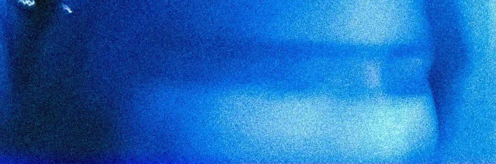
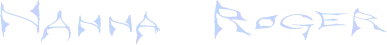

OM
I EN ALDER AF 23 START EDE JEG PÅ MULTIMEDIEDESIGN PÅ KEA, BELIGGENDE PÅ NØRREBRO. DENNE HJEMMESIDE INDEHOLDER MIT PORTFOLIO, HERUNDER SPIL, VIDEOER OG ANDRE HJEMMESIDER, SOM VI HAR SKABT I LØBET AF DETTE SEMESTER. JEG HÅBER, DU FIN DER DET LIGE SÅ FASCINERENDE SOM JEG GJORDE DISSE SENESTE 6 MÅNEDER.